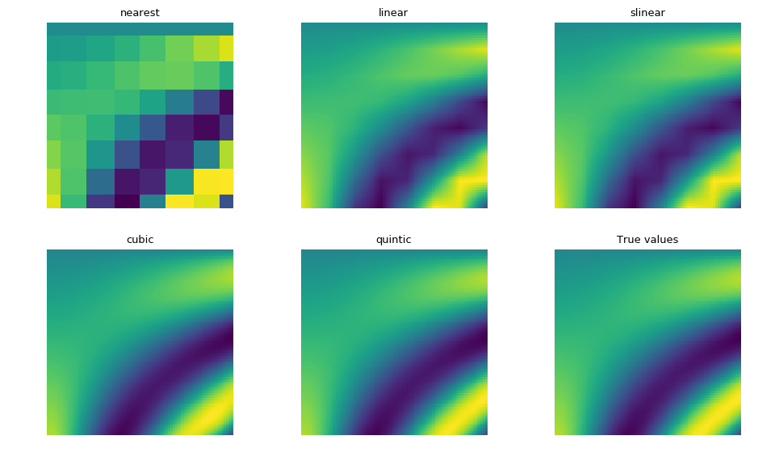
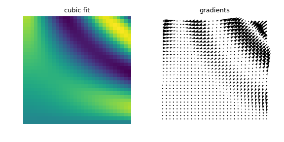
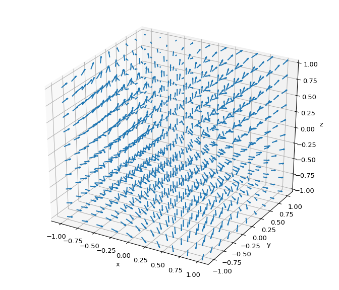

Previous topic
Next topic
scipy.interpolate.RegularGridInterpolator¶
-
class
scipy.interpolate.RegularGridInterpolator(points, values, method='linear', bounds_error=True, fill_value=nan, spline_dim_error=True)[source]¶ Interpolation on a regular grid in arbitrary dimensions.
The data must be defined on a regular grid; the grid spacing however may be uneven. Linear, nearest-neighbour, and third through fifth order spline interpolation are supported. After setting up the interpolator object, the interpolation method (nearest, linear, slinear, cubic, and quintic) may be chosen at each evaluation. Additionally, gradients are provided for the spline interpolation methods.
Parameters: points : tuple of ndarray of float, with shapes (m1, ), …, (mn, )
The points defining the regular grid in n dimensions.
values : array_like, shape (m1, …, mn, …)
The data on the regular grid in n dimensions.
method : str, optional
The method of interpolation to perform. Supported are ‘nearest’, ‘linear’, ‘slinear’, ‘cubic’, and ‘quintic’. This parameter will become the default for the object’s
__call__method. Default is “linear”.bounds_error : bool, optional
If True, when interpolated values are requested outside of the domain of the input data, a ValueError is raised. If False, then fill_value is used. Default is True (raise an exception).
fill_value : number, optional
If provided, the value to use for points outside of the interpolation domain. If None, values outside the domain are extrapolated. Note that gradient values will always be extrapolated rather than set to the fill_value if bounds_error=False for any points outside of the interpolation domain. Default is np.nan.
spline_dim_error : bool, optional
If spline_dim_error=True and an order k spline interpolation method is used, then if any dimension has fewer points than k + 1, an error will be raised. If spline_dim_error=False, then the spline interpolant order will be reduced as needed on a per-dimension basis. Default is True (raise an exception).
Notes
Contrary to LinearNDInterpolator and NearestNDInterpolator, this class avoids expensive triangulation of the input data by taking advantage of the regular grid structure.
If any of points have a dimension of size 1, linear interpolation will return an array of nan values. Nearest-neighbor interpolation will work as usual in this case.
The ‘slinear’, ‘cubic’ and ‘quintic’ methods are all spline-based interpolators. These make use of
BSplineinterpolators in each dimension. Use of the spline interpolations allows for getting gradient values via thegradientmethod.Interpolation with the spline methods is expectedly slower than ‘linear’ or ‘nearest’. They use a different separable tensor product interpolation strategy, and are best used when the fitted data (the points and values arrays) are large relative to the number of points to be interpolated. As such, they are not an efficient choice for some tasks, such as re-sampling of image data.
New in version 0.14.
Examples
Evaluate a simple example function on the points of a 3D grid:
>>> import numpy as np >>> from scipy.interpolate import RegularGridInterpolator >>> def f(x, y, z): ... return 2 * x**3 + 3 * y**2 - z >>> x = np.linspace(1, 4, 11) >>> y = np.linspace(4, 7, 22) >>> z = np.linspace(7, 9, 33) >>> data = f(*np.meshgrid(x, y, z, indexing='ij', sparse=True))
datais now a 3D array withdata[i,j,k] = f(x[i], y[j], z[k]). Next, define an interpolating function from this data:>>> my_interpolating_function = RegularGridInterpolator((x, y, z), data)
Evaluate the interpolating function at the two points
(x,y,z) = (2.1, 6.2, 8.3)and(3.3, 5.2, 7.1):>>> pts = np.array([[2.1, 6.2, 8.3], [3.3, 5.2, 7.1]]) >>> my_interpolating_function(pts) array([ 125.80469388, 146.30069388])
which is indeed a close approximation to
[f(2.1, 6.2, 8.3), f(3.3, 5.2, 7.1)].With the spline interpolation methods it is possible to compute smooth gradients for a variety of purposes, such as numerical optimization.
To demonstrate this, let’s define a function with known gradients for demonstration, and create grid sample axes with a variety of sizes:
>>> from scipy.optimize import fmin_bfgs >>> def F(u, v, z, w): ... return (u - 5.234)**2 + (v - 2.128)**2 + (z - 5.531)**2 + (w - 0.574)**2 >>> def dF(u, v, z, w): ... return 2 * (u - 5.234), 2 * (v - 2.128), 2 * (z - 5.531), 2 * (w - 0.574) >>> np.random.seed(0) >>> U = np.linspace(0, 10, 10) >>> V = np.random.uniform(0, 10, 10) >>> Z = np.random.uniform(0, 10, 10) >>> W = np.linspace(0, 10, 10) >>> V.sort(), Z.sort() (None, None) >>> points = [U, V, Z, W] >>> values = F(*np.meshgrid(*points, indexing='ij'))
Now, define a random sampling point
>>> x = np.random.uniform(1, 9, 4)
With the cubic interpolation method, gradient information will be available:
>>> interp = RegularGridInterpolator( ... points, values, method="cubic", bounds_error=False, fill_value=None)
This provides smooth interpolation values for approximating the original function and its gradient:
>>> F(*x), interp(x) (85.842906385928046, array(85.84290638592806)) >>> dF(*x) (7.1898934757242223, 10.530537027467577, -1.6783302039530898, 13.340466820583288) >>> interp.gradient(x) array([ 7.18989348, 10.53053703, -1.6783302 , 13.34046682])
The
gradientmethod can conveniently be passed as an argument to any procedure that requires gradient information, such asscipy.optimize.fmin_bfgs:>>> opt = fmin_bfgs(interp, x, fprime=interp.gradient) Optimization terminated successfully. Current function value: 0.000000 Iterations: 3 Function evaluations: 5 Gradient evaluations: 5
Despite the course data grid and non-homogeneous axis dimensions, the computed minimum matches the known solution very well:
>>> print(opt) [ 5.234 2.128 5.531 0.574]
All available interpolation methods can be compared based on the task of fitting a course sampling to interpolate a finer representation:
>>> import numpy as np >>> from scipy.interpolate import RegularGridInterpolator as RGI >>> import matplotlib.pyplot as plt >>> from matplotlib import rcParams >>> rcParams['figure.figsize'] = (10, 6) >>> >>> def F(u, v): ... return u * np.cos(u * v) + v * np.sin(u * v) >>> fit_points = [np.linspace(0, 3, 8), np.linspace(0, 3, 8)] >>> values = F(*np.meshgrid(*fit_points, indexing='ij')) >>> test_points = [np.linspace(fit_points[0][0], fit_points[0][-1], 80), np.linspace( ... fit_points[1][0], fit_points[1][-1], 80)] >>> ut, vt = np.meshgrid(*test_points, indexing='ij') >>> true_values = F(ut, vt) >>> pts = np.array([ut.ravel(), vt.ravel()]).T >>> plt.figure() >>> for i, method in enumerate(RGI.methods()): ... plt.subplot(2, 3, i + 1) ... interp = RGI(fit_points, values, method=method) ... im = interp(pts).reshape(80, 80) ... plt.imshow(im, interpolation='nearest') ... plt.gca().axis('off') ... plt.title(method) >>> plt.subplot(2, 3, 6) >>> plt.title("True values") >>> plt.gca().axis('off') >>> plt.gcf().subplots_adjust(left=0, right=1, bottom=0, top=1) >>> plt.tight_layout() >>> plt.imshow(true_values, interpolation='nearest') >>> plt.show()
As expected, the cubic and quintic spline interpolations are closer to the true values, though are more expensive to compute than with linear or nearest. The slinear interpolation also matches the linear interpolation.
The computed gradient fields can also be visualized:
>>> import numpy as np >>> from scipy.interpolate import RegularGridInterpolator as RGI >>> from matplotlib import pyplot as plt >>> from matplotlib import rcParams >>> rcParams['figure.figsize'] = (6, 3) >>> n = 30 >>> fit_points = [np.linspace(0, 3, 8), np.linspace(0, 3, 8)] >>> values = F(*np.meshgrid(*fit_points, indexing='ij')) >>> test_points = [np.linspace(0, 3, n), np.linspace(0, 3, n)] >>> ut, vt = np.meshgrid(*test_points, indexing='ij') >>> true_values = F(ut, vt) >>> pts = np.array([ut.ravel(), vt.ravel()]).T >>> interp = RGI(fit_points, values, method='cubic') >>> im = interp(pts).reshape(n, n) >>> gradient = interp.gradient(pts).reshape(n, n, 2) >>> plt.figure() >>> plt.subplot(121) >>> plt.title("cubic fit") >>> plt.imshow(im[::-1], interpolation='nearest') >>> plt.gca().axis('off') >>> plt.gcf().subplots_adjust(left=0, right=1, bottom=0, top=1) >>> plt.tight_layout() >>> plt.subplot(122) >>> plt.title('gradients') >>> plt.gca().axis('off') >>> plt.gcf().subplots_adjust(left=0, right=1, bottom=0, top=1) >>> plt.tight_layout() >>> plt.quiver(ut, vt, gradient[:, :, 0], gradient[:, :, 1], width=0.01) >>> plt.show()
Higher-dimensional gradient field predictions and visualizations can be done the same way:
>>> import numpy as np >>> from scipy.interpolate import RegularGridInterpolator >>> import matplotlib.pyplot as plt >>> from mpl_toolkits.mplot3d import axes3d >>> from matplotlib import rcParams >>> rcParams['figure.figsize'] = (7, 6) >>> # set up 4D test problem >>> fig = plt.figure() >>> ax = fig.gca(projection='3d') >>> ax.set_xlabel('x'), ax.set_ylabel('y'), ax.set_zlabel('z') >>> n = 10 >>> pts = [np.linspace(-1, 1, n), np.linspace(-1, 1, n), np.linspace(-1, 1, n)] >>> x, y, z = np.meshgrid(*pts, indexing='ij') >>> voxels = np.array([x.ravel(), y.ravel(), z.ravel()]).T >>> values = np.sin(x) * y**2 - np.cos(z) >>> # interpolate the created 4D data >>> interp = RegularGridInterpolator(pts, values, method='cubic') >>> gradient = interp.gradient(voxels).reshape(n, n, n, 3) >>> u, v, w = gradient[:, :, :, 0], gradient[:, :, :, 1], gradient[:, :, :, 2] >>> # Plot the predicted gradient field >>> fig.tight_layout() >>> ax.quiver(x, y, z, u, v, w, length=0.1, normalize=True) >>> plt.show()
Methods
__call__(xi[, method, compute_gradients])Interpolation at coordinates gradient(xi[, method])Return the computed gradients at the specified point. methods()Return a list of valid interpolation method names.